Re-Implementing Facebook Reaction Animation
Table of Contents
Disclaimer: I'm not a Facebook engineer, and I don't know how did they make it. This is just my own implementation. It may not have the best performance and I'm just tested on Chrome 😅
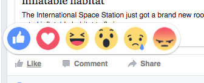
Figure 1: Facebook's Reaction Popup — or whatever it called
If you are a Facebooker, chance you will use this popup every day.
In this blog post, we will learn how to implement it. In HTML/CSS and a bit of JavaScript.
1 Breaking down the animation
OK. Let's break it down step by step, so we will see and understand the animation in detailed.
There are 2 phases of the animation: Show up phase and Mouse hover phase.
For the sake of simplicity, this is the simplified version of a feed, on your News Feed. The green rectangle is where the Like button stays, you hover your mouse over it and a yellow popup (in reality, it‘s white) show up.
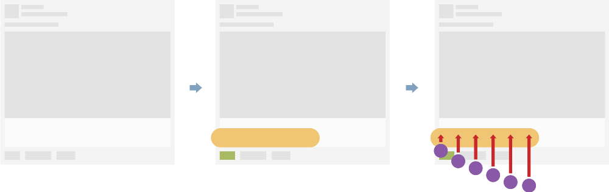
Then, the emoticons ascend, one by one. The red arrows here tells us the animation direction of the emoticons.
If we look carefully into each emoticon, you will see it has the easing effect in its animation, like this:
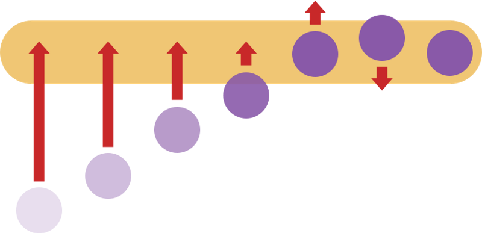
When all emoticons finish its animation, phase 1 (Show up) finished.
Phase 2 (Mouse Hover) begins when the user hovers his mouse on an emoticon.
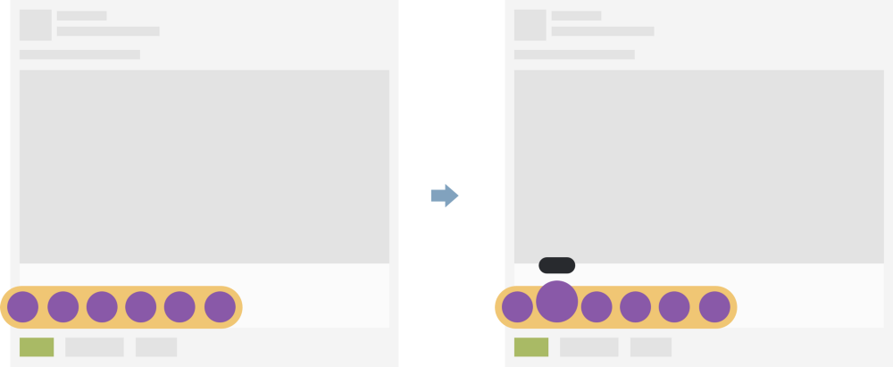
The selected emoticon will scale up a bit, and a black label appears on the top to tell us what is the name of this emoticon.
Not so complex, huh?
2 Raw implementation
Now, we start the implementation. In the beginning, we just implement the raw HTML structure, add some basic actions with CSS, no animation here in this part.
It's recommended to use Codepen.io for prototyping, so we have the live preview, SCSS compiling on the go,…
But you can write code on your local machine, it's up to you. All we need is: HTML, SCSS, and jQuery (or you can convert the jQuery code at the end of this post to vanilla JS or whatever you want)
2.1 Prototyping the news feed post
So we want to create a news feed item, and add a Like button to it.
HTML Code:
<div class="feed"> <a class="like-btn"></a> </div>
CSS (SCSS):
html,
body {
padding: 20px;
font-family: sans-serif;
}
.feed {
width: 500px;
height: 473px;
background-image: url(<path-to-placeholder-image>);
position: relative;
.like-btn {
width: 44px;
height: 25px;
background: #D0D0D0;
position: absolute;
bottom: 13px;
left: 13px;
cursor: pointer;
&:hover {
background: #718C00;
}
}
}
You can copy the URL of the image below and replace to
<path-to-placeholder-image>, or use the uploaded image
on Imgur.
{kind=link}

Figure 5: Copy this image URL as a placeholder image
Now you have your news feed prototype, try to hover over the Like button, see? It's green! It's cool now, isn't it?
2.2 Display the reaction box
The next step is adding the reaction box. This will be a 312x55 pixels rectangle with rounded corners.
Reaction box will only show up when the user hovers on the Like button.
OK, let's create a div, the class name is reaction-box, put it inside
the Like button.
HTML Code:
<div class="feed">
<a class="like-btn">
<div class="reaction-box"></div>
</a>
</div>
Our reaction box will be hidden, so we set its display attribute to
none. And in Like button's :hover event, we set it back to block.
CSS (SCSS):
.like-btn {
...
.reaction-box {
position: absolute;
width: 312px; height: 55px;
background: #F0C674;
border-radius: 28px;
left: -25px; bottom: 25px;
display: none;
}
&:hover {
...
.reaction-box {
display: block;
}
}
}
This is the result:
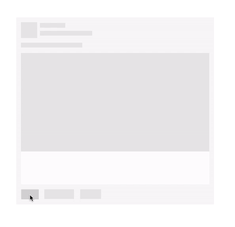
2.3 Adding the emoticons
Now we have the reaction box displayed, let's add some emoticons so it will look like the real Facebook 🤗
Because we're just prototyping, so, just use the small circles to represent our emoticons.
This is the HTML structure for an emoticon:
<div class="reaction-icon"> <label>Like</label> </div>
We also need a label inside, so we can show the user what's the name of this emoticon.
Let's add 6 reaction icons to represent the real Facebook's reactions: Like, Love, Haha, Wow, Sad and Angry. Put them inside reaction box.
Then we use CSS transform to scale up these emoticons on mouse hover event.
HTML Code:
...
<div class="reaction-box">
<div class="reaction-icon">
<label>Like</label>
</div>
<div class="reaction-icon">
<label>Love</label>
</div>
<div class="reaction-icon">
<label>Haha</label>
</div>
<div class="reaction-icon">
<label>Wow</label>
</div>
<div class="reaction-icon">
<label>Sad</label>
</div>
<div class="reaction-icon">
<label>Angry</label>
</div>
</div>
...
Insert this CSS inside reaction box:
CSS (SCSS):
.reaction-box {
...
// insert here
.reaction-icon {
width: 40px;
height: 40px;
display: inline-block;
background: #8959A8;
border-radius: 20px;
margin: 8px -1px 0 8px;
text-align: center;
label {
padding: 3px 5px 3px 5px;
position: relative;
top: -24px;
border-radius: 10px;
font-size: 11px;
color: #FFF;
background: #333;
}
}
}
And insert this inside :hover event of the Like button.
&:hover {
...
.reaction-box {
...
.reaction-icon:hover { // changed here!
transform: scale(1.4);
transform-origin: bottom;
}
}
}
We scale up the emoticon 1.4 times when the user hovers his mouse to
Like button. We also set the transform-origin attribute to bottom, so
the origin of the scale-up effect will be on the bottom edge of the
emoticon.
And this is the result:
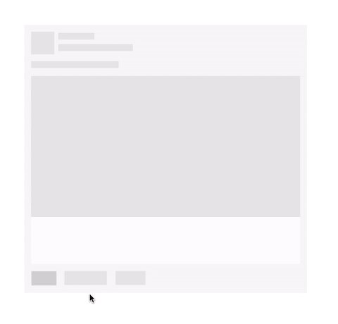
2.4 Did you see a bug?
You may notice that the reaction box is too close to the Like button, it should not. How about moving it up a bit?
Okay, since reaction box has an absolute position, let's change its
bottom attribute from 25px to 35px (10px upper)
.reaction-box {
...
left: -25px; bottom: 35px;
...
Looks better now, right? But wait! WT*?? It's broken! I can't hover my mouse to the reaction box anymore!! What did you do??? Why you break my code???
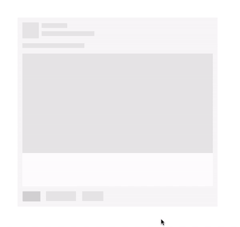
OK. Calm down. Let's take a step back, and look at the code.
The reason is that the distance between reaction box and Like button now
increased to 10px, so, when you tried to move the cursor to reaction
box, it will go out of Like button's hover region, so it triggers the
mouse out event. If you look at the CSS rules, you can see we display
the reaction box based on Like button's hover event. On mouse out,
reaction box will be back to its original state (display: none)
The solution is: Increase the hover region of Like button, so it can fill the distance to reaction box.
There are many ways to do it, we will take the simplest way: Add the
::before pseudo-element to Like button, it will be a box with the size
of 44x10, and it's transparent, so user can't see it but it will fill
the distance to reaction box.
.like-btn {
...
&::before {
content: ".";
opacity: 0;
display: block;
width: 44px; height: 10px;
position: absolute;
top: -10px; left: 0;
}
Now you can refresh the page. It should be fine now :)
2.5 Display emoticon's label only on mouse hover
The next thing to do is to hide all emoticon's labels and display them when user hover on each emoticon.
label {
...
visibility: hidden;
}
Then display them in :hover event of reaction icon (emoticon).
.reaction-icon:hover {
...
label {
visibility: visible;
}
}
This is the result:
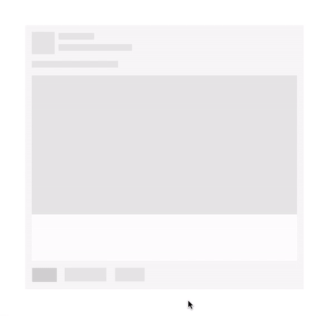
Alright, let's take a break here. It's a long post and you need some rest, so do I =]]
You can revise the full code for this raw implementation phase here: Codepen — Facebook Reaction Animation — Part 1.
3 Adding Animation
Now, let's the pain begin. In this part, we will implement some animations to give the better feeling for users.
3.1 Emoticon zooming animation
Let's start with the simplest one. We will slowly zooming the emoticon by adding transition: all 0.3s; attribute to emoticons:
CSS (SCSS):
reaction-icon {
...
// Animation
transition: all 0.3s;
By adding transition with all and 0.3s parameters, we tell the
browser that all of the emoticon's attributes can be animated (slowly
changing) in the duration of 0.3 seconds.
So this is our first animation:
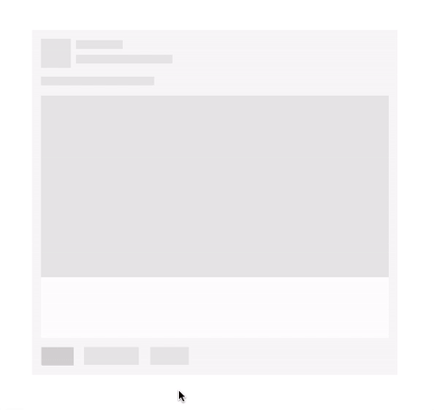
If you have no idea about transition, you may want to read this
article
Using
CSS transitions — MDN.
3.2 Emoticon's show up animation
Let's take a look at the show-up animation again:
This animation can be represented in a graph:
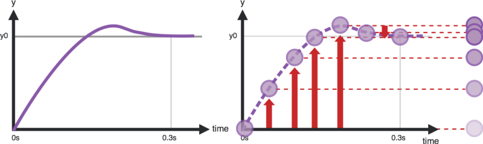
As you see, the y-axis represents emoticon's y position over time.
The function that represents the graph above is also the way we can control how the attributes change over time, they called: easing functions (or timing functions).
In CSS transition, we can set the timing functions for an element by using transition-timing-function attribute.
You should read more about timing function here Timing Function - MDN.
The timing function we gonna use here is easeOutBack, it's a bezier
that can be defined in CSS by using cubic-bezier() function.
We will use the predefined cubic-bezier() function for easeOutBack
from here Easing Function - easeOutBack.
cubic-bezier(0.175, 0.885, 0.32, 1.275)
Add this function to reaction-icon's transition attribute:
.reaction-icon {
...
// Animation
transition: all 0.3s cubic-bezier(0.175, 0.885, 0.32, 1.275);
The emoticons will appear with the starting opacity is 0, scaling is 0 and the position is 100px away from the desired position — we call this is the first state.
.reaction-icon {
...
// Animation
opacity: 0;
transform: translate(0, 100px) scale(0);
Now we add a new class to define the final state of its animation, let's
call it .show, and put it in the :hover event of Like button:
&:hover {
...
.reaction-box {
...
.reaction-icon {
&.show {
opacity: 1;
transform: translate(0, 0) scale(1);
}
So, what will happen here? When the user hovers on the Like button, we
search for the emoticons and assign the class .show to activate the
animation. We can do it with JavaScript (jQuery - lol, it's okay, you
can use anything else):
$(function() {
$(".like-btn").hover(function() {
$(".reaction-icon").each(function(index, element) {
setTimeout(function() {
$(element).addClass("show");
}, index * 100);
});
}, function() {
$(".reaction-icon").removeClass("show")
});
})
You may notice the setTimeout(), we use it to delay the addClass
action on each emoticon, based on its index. From the first emoticon
(index = 0) to the last one (index = 5), we have the particular delay
time is 0, 100ms, 200ms, 300ms, 400ms and 500ms. So we have the chasing
effect of emoticons show up.
Now refresh and see:
We're done!
If you get lost somewhere in the middle of this post, don't panic, let's head to this page to see the source code: Codepen — Facebook Reaction Animation — Part 2.
What's left to be done is reskin the elements to get more realistic result like this:
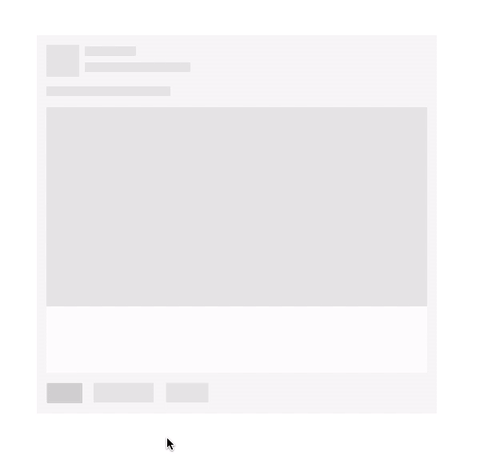
See higher resolution video here https://gfycat.com/ZigzagForthrightCob.
If you want more improvement, you may want to consider Amazon's Magic Triangle (and its implementation here) to get more stable when moving your cursor.
Hope you like this post. If you spot any error or have any question, feel free to leave a comment so we can discuss.
See you in the next posts. Happy CSSing ^^